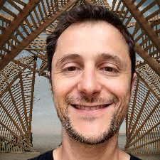

Welcome! I am a professor of economics at UPPA (UMR TREE) in France.
My research started in New Economic Geography, bridging urban and international economics. I have since worked on urban topics (social housing, local human capital, telecommuting), international trade (trade policy, tax competition, transport costs), and more recently environmental economics (pollution havens, climate change, water resources, marine ecosystems).
